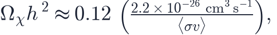
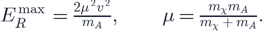
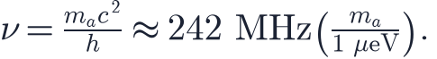

In this lesson you will learn
|
What we are looking for
Lesson L3.2 collected the evidence: rotation curves, clusters, lensing and the CMB all need more mass than we can see. Taken together, they also tell us a good deal about what the dark matter must be like:
- Not ordinary matter. Nucleosynthesis and the CMB fix the baryons at about 5% of the critical density; dark matter is about 26%, five times more.
- Cold. It moved slowly when structure began to form, or small galaxies would have been smoothed away (L5.5).
- Dark and nearly collisionless. It neither emits nor absorbs light, and it passes through itself: in the Bullet Cluster the dark matter sailed on while the gas collided.
- Stable. It is still here after 13.8 billion years.
That is all. Nothing fixes the mass of one dark matter particle — if it is a particle at all. Allowed candidates run from about eV, where one quantum is as large as a dwarf galaxy, to black holes of tens of solar masses: some ninety orders of magnitude. No single experiment can search such a range, so each one looks under a different lamp post.
The WIMP miracle
The most studied candidate for forty years has been the WIMP, a weakly interacting massive particle with a mass of roughly 10–1000 GeV. Its appeal is an argument, not an observation.
In the hot early universe WIMPs would have been made and destroyed in pairs, like every other particle. As the universe cooled, production stopped; as it expanded, WIMPs grew too dilute to find each other and annihilate. Their number then froze, and what was left is the dark matter today. The leftover amount depends only on how quickly they annihilated.
The relic abundance A particle that freezes out of equilibrium leaves a density  where |
That coincidence — the "WIMP miracle" — is why supersymmetric particles, which the LHC was expected to find, were for decades the leading candidate. The miracle is a hint, not a proof, and the searches below have steadily narrowed where WIMPs can hide.
Direct detection: waiting for a nucleus to twitch
The Milky Way sits inside a halo of dark matter, and the Sun moves through it at about 230 km/s. If WIMPs exist, billions pass through your hand every second. Very rarely one bounces off an atomic nucleus, which recoils with a few keV to a few tens of keV. That is direct detection.
How hard is the kick? In an elastic collision the recoil energy is largest for a head-on hit:  A 100 GeV WIMP at 220 km/s on a xenon nucleus ( GeV) gives at most about 27 keV. A 5 GeV WIMP at the same speed gives xenon only about 0.2 keV — even the fastest ones in the halo give only about 2.5 keV — while a light silicon nucleus gets almost four times more. Light WIMPs need light targets and low thresholds. |
The difficulty is the rate: at most a few events per tonne per year. Everything else must be removed. The detectors sit deep underground to shield them from cosmic rays, are built from specially selected low-radioactivity materials, and use the outer layer of their own target as a shield. The largest, LZ, XENONnT and PandaX-4T, hold several tonnes of liquid xenon; each recoil produces a flash of light and a few electrons, and the ratio of the two separates nuclear recoils (a WIMP or a neutron) from electron recoils (most backgrounds).
An exclusion curve When a detector sees nothing beyond its background, it has still learned something: any WIMP that would have produced more than about 2.3 events is ruled out at 90% confidence. Doing that for every WIMP mass draws an exclusion curve in the mass–cross-section plane. Above the curve is excluded; below it, a WIMP could still hide. The best limit today is about cm² near 40 GeV, from LZ in 2024 — a hundred million times weaker than the weak force's own cross-section. |
Try it: Dark Matter Detection Start from the xenon detector and move the WIMP mass. Find where the curve is lowest, and see why it rises on both sides. |
The curve cannot fall forever. Neutrinos from the Sun, from supernovae in the past and from cosmic rays hitting the atmosphere also scatter coherently off nuclei, and they look just like WIMPs. Below a certain cross-section every detector sees them, and progress slows to a crawl: the neutrino fog. In 2024 XENONnT and PandaX-4T reported the first hints of solar ⁸B neutrinos scattering off xenon — the fog has started to roll in.
The DAMA modulation The Earth orbits the Sun, so for half the year it adds its speed to the Sun's motion through the halo, and for half the year subtracts it. The WIMP rate should therefore swing by a few per cent each year, peaking around 2 June: an annual modulation. The DAMA/LIBRA experiment in Italy has seen exactly such a modulation in sodium iodide crystals for more than twenty years. But no other experiment sees the corresponding WIMP, and COSINE-100 and ANAIS-112, built from the same sodium iodide, find no modulation, incompatible with DAMA's at more than four standard deviations. The signal is real in DAMA's data; what causes it is still argued about. |
Indirect detection and colliders
If dark matter particles annihilate, the dense centres of galaxies should shine faintly with their products: gamma rays, positrons, neutrinos. This is indirect detection.
- The Fermi gamma-ray telescope stacked dozens of dwarf galaxies, the most dark-matter dominated objects known, and saw nothing. For the simplest WIMPs this rules out the thermal annihilation rate below about 100 GeV.
- The centre of the Milky Way does show an excess of GeV gamma rays. It could be dark matter; it could equally be a population of unresolved millisecond pulsars, and the debate is not settled.
- An X-ray line at 3.5 keV, reported in 2014 in stacked galaxy clusters, was proposed as the decay of a sterile neutrino. Deeper searches have not confirmed it.
At the LHC, dark matter would be produced in collisions and escape unseen, leaving an imbalance of momentum in the detector. No such signal, and no supersymmetric particle, has appeared so far.
Axions: a solution looking for a problem, twice
The axion was invented in 1977 for a completely different reason. The equations of the strong nuclear force allow it to violate the symmetry between matter and its mirror image, which would give the neutron an electric dipole moment. Experiments show that the relevant parameter is smaller than — for no apparent reason. Roberto Peccei and Helen Quinn proposed a mechanism that sets it to zero dynamically; Steven Weinberg and Frank Wilczek noticed that the mechanism implies a new, very light particle.
That particle turns out to be a perfect dark matter candidate. Produced not thermally but as a coherent field oscillating through the early universe, axions would be extremely cold, with masses around a millionth of an electronvolt.
Tuning in In a strong magnetic field an axion can turn into a photon with an energy equal to its mass, so the photon frequency is  A haloscope such as ADMX places a microwave cavity inside a magnet and tunes its resonance slowly across frequencies, like a radio searching for a station, listening for a faint excess of power. |
ADMX has reached the sensitivity for realistic axion models between about 2.7 and 4 μeV. The rest of the plausible range is being covered by new cavities, dielectric stacks and quantum-limited amplifiers.
The rest of the list
- Fuzzy dark matter: an ultralight particle of eV whose quantum wavelength is a kiloparsec, smoothing out the cores of small galaxies. Lyman-α forest data now press it hard.
- Sterile neutrinos: heavier cousins of ordinary neutrinos, a warm dark matter candidate.
- Primordial black holes (L6.9): not a particle at all. Microlensing and other constraints leave only narrow windows.
- Self-interacting or dark-sector particles with forces of their own.
Absence of evidence None of these searches has found dark matter. That does not make it less real: the gravitational evidence is as strong as ever. What the null results tell us is where it is not, and they have already ruled out much of what was considered most natural in 2000. |
Remember this
|